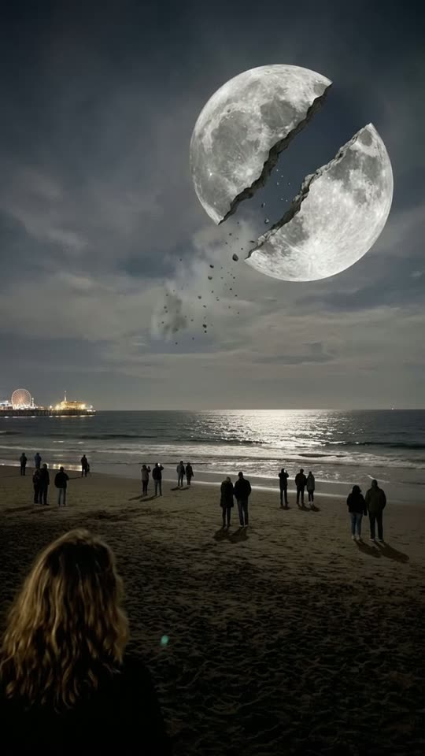
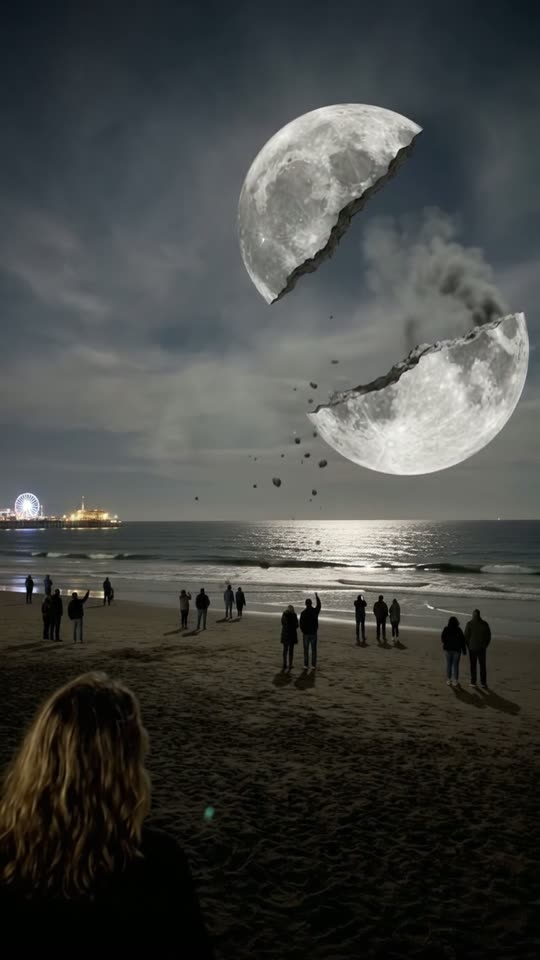
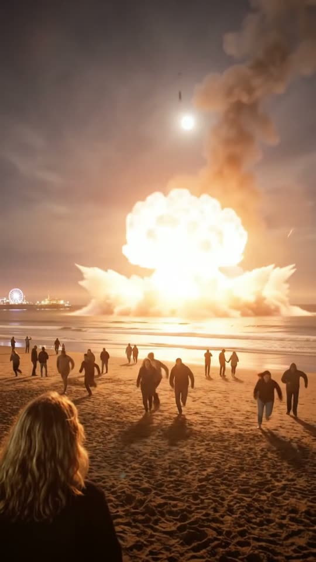
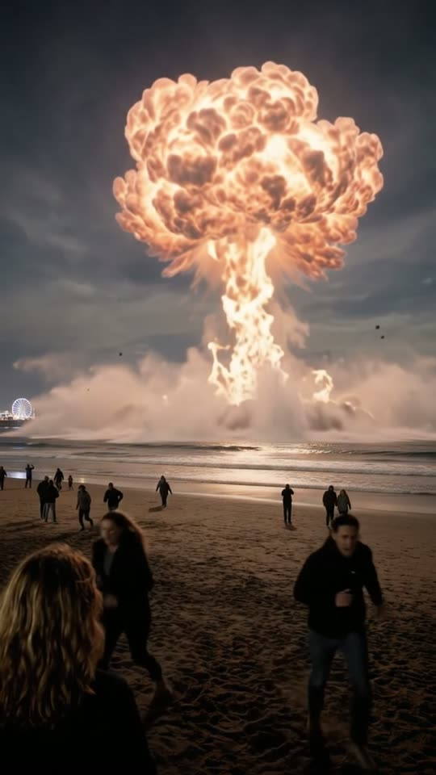

Free prompt pack
One moon.Two halves.
Nobody watched the moon break over a beach. One still image, one edit and one prompt that drops half of it into the sea, second by second.
Every prompt, in the order I ran them. Swipe across each one to split it. Tap the sky for a shooting star.
The beach
The moon high, the people spread out. A wide night beach, a big full moon high over the sea, people scattered in twos and threes and the back of a head in the corner.
Watch out
Keep the moon high in the sky. Ask for a huge low moon and it sits on the water like a planet, with nowhere left to fall.

The prompt 147 words
Real handheld night photo taken at chest height on a wide sandy beach. High in the sky at upper centre-right hangs a big bright full moon, a quarter of the frame wide, its grey craters and dark plains sharp; a thin jagged crack already runs diagonally across its face from its upper-left edge to the middle, with a faint wisp of grey dust at its tip. Below it, a long silver path of moonlight on the waves; the horizon sits just above the middle of the frame. About fifteen people are scattered across the dark beach in twos and threes, small in the frame, some looking up, some walking. In the bottom-left corner, close to the camera, the back of a woman's head with long light-brown hair. Far away at frame-left on the horizon, a lit pier with a Ferris wheel. Night clouds. Real photo, natural colour.
Break it in the picture
The half that falls has to exist first. Edit the image so the moon is already snapped in two, the lower half a little apart. With a whole moon, the video cracks the sky instead and drops some other fireball.
The prompt 138 words
Edit this photo. Break the moon cleanly in two, like a plate snapped in half, along one jagged line that runs diagonally from its upper-right edge to its lower-left edge. The upper-left half stays exactly where the moon is now. The lower-right half has already moved a little away from it, down and to the right, leaving a narrow gap of dark night sky between the two broken edges. Both halves keep their grey craters and dark plains, and their broken edges are rough grey rock. A little grey dust and a few small rocks drift inside the gap only. The pale wisp of cloud trailing from the moon to the lower left is gone. Keep the beach, the people, the woman in the bottom-left corner, the pier, the sea and the night light exactly as they are.
The fall
Ten seconds, written second by second. Add the split image as the reference, set 10 s, 9:16, 720p and audio on, and paste the prompt whole.
- 0–1.5 sthe gap between the halves opens
- 1.5–3.0 sthe lower half drifts away
- 3.0–6.5 sit falls, burning, growing
- 6.5–7.1 sit hits the sea
- 7.1–10 sa fireball over the water, everyone runs
Watch out
Lock the falling piece: the same half, with the same craters, all the way down. Say only that it falls and the model drops a brand-new fireball from nowhere.
Fragments



The prompt 1411 words
FORMAT Real handheld night video on a beach, seen as the finished exported video file: the full picture edge to edge, nothing on top of it. Whatever records the picture is never in frame. One continuous take in real time, no cuts, no zoom. Vertical frame. The video runs at 24 fps. No frame is repeated. Real time, 1x speed, never slow motion. SCENE On a wide beach at night, people scattered across the sand watch a big full moon high in the sky over the sea. The moon has just broken cleanly in two, and in the first frame its lower-right half has already started to come apart from the upper-left half. That lower-right half drifts away and falls toward the Earth: its lower rim glows orange as it enters the sky, it trails dark smoke, grows larger and larger, and slams into the sea on the horizon. A giant fireball rises over the water and the people run up the beach toward the camera. The upper-left half stays in the sky the whole time. The take ends on the fireball towering over the horizon and the people running past the camera. REFERENCE IMAGE Use it for the beach, the sea, the pier, the people, the woman in the corner, the two halves of the moon with their gap, their size and their place high in the sky, and the night light. Everything matches it exactly, zero drift, no smoothing. The action is described below. THE MOON A real full moon, grey and white, with sharp craters and dark plains, a quarter of the frame wide, high in the sky at upper centre-right, broken cleanly in two like a plate snapped in half, along one jagged line that runs from its upper-right edge to its lower-left edge. Exactly two solid halves, each keeping its own craters, with rough grey rock along the broken edges. The gap between them is dark night sky; grey dust and a few small rocks drift only inside that gap. The upper-left half never moves: it stays where it is, a grey half-moon with a broken edge, lit and visible from the first frame to the last. Nothing outside the moon cracks: the sky, the clouds and the picture never crack. THE FALLING HALF The falling object is the lower-right half of the moon itself: the same grey half-disc, with the same craters and the same broken edge facing up. It drifts away from the upper half, then drops faster and faster, down out of the high sky toward the sea and toward the camera, growing larger in the frame: from a quarter of the frame to half of it. As it enters the sky its lower rim glows red, then bright orange, and a thick column of dark smoke and sparks streams up from it, but its grey cratered face stays visible above the glow the whole way down. It never turns into a separate ball of fire, never becomes a second moon, and no other object appears from anywhere: one single piece falls, and it is this half. LOCATION MAP The camera is on the sand, at chest height, looking out to sea over a wide beach. Bottom-left corner: the back of a woman's head with long light-brown hair, close to the camera, her hands down; she stays in that corner the whole take and never walks away from the camera. On the beach: about fifteen people scattered in twos and threes, small in the frame, some looking up, some walking. Far away at frame-left on the horizon: a lit pier with a Ferris wheel. The horizon just above the middle of the frame. The two halves of the moon high in the sky at upper centre-right, with a wide band of dark cloudy sky between them and the horizon. FIRST FRAME Already moving: the two halves of the moon at x 45-80%, y 10-30%, the upper-left half where the moon was, the lower-right half a little apart from it, down and to the right, with a narrow gap of dark sky and a little dust between their broken edges; the horizon at y 48%; the silver moonlight path on the water below the moon; the scattered people on the sand at y 55-75%, two raised phones glowing far away; the woman's head in the bottom-left corner, x 0-25%, y 70-100%; the pier at x 0-28%, y 45-49%. Instant read: the moon has broken in half. No delayed reveal. CAMERA Handheld at chest height, almost still: a small natural sway, and a startled jolt at the impact. It never zooms, never pans away, never tilts up or down, never cuts. The horizon stays at y 48% and the pier at frame-left from the first second to the last. ACTION TIMING 0–1.5 s — With a deep grinding rumble the gap between the two halves widens; grey dust and small rocks drift out of it; a man on the beach lowers his phone. 1.5–3.0 s — The lower-right half tips slowly and drifts away from the upper half, down and to the right; the upper half stays exactly where it is. 3.0–6.5 s — The lower-right half falls toward the sea, faster and faster, its grey cratered face still visible, its lower rim glowing red then bright orange, a thick column of dark smoke and sparks streaming up from it, growing to half the frame wide; its orange light spreads over the waves and the sand; the people on the beach turn and start to run up the sand toward the camera. 6.5–7.1 s — It slams into the sea on the horizon at frame-right of centre: a blinding flash on the horizon lights the whole beach orange for a moment; the beach, the people and the sky stay visible. 7.1–10 s — A giant orange and pink fireball and a wall of steam rise from the sea on the horizon, towering over it; a wave of spray rushes in; people run toward the camera and past it at both sides, sand flying from their feet. Hold to the last frame. PHYSICS AND SCALE Gravity: the falling half accelerates the whole way, never floats and never stops in the air; it never shrinks; it grows as it comes closer. The upper half stays where it is, unchanged, to the last frame. The fireball rises slowly because it is huge and far away; the people are small against it. The ground shakes at the impact. Nothing morphs: one moon, two halves, one fall. LIGHTING Cold silver moonlight at the start; as the half falls, warm orange light from it spreads across the water, the sand and the backs of the people, and at the impact the whole beach glows orange. The pier lights stay on. AUDIO No music, no score, no narration, no subtitles. A beach at night: waves, wind on the mic, a murmur from the crowd that turns into gasps; a deep grinding rumble as the moon cracks; a rising roar as the half falls; a huge boom a moment after the flash, which makes the mic clip; screams and running feet on sand. No clear words. LOOK Real handheld night footage, seen as the finished exported file: digital noise in the shadows, crisp highlights, auto-exposure that darkens a little when the fireball lights up, a small shake at the impact, no colour grade, no film grain, no lens flare, no slow motion. No camera app interface: no shutter button, no gallery thumbnail, no record button, no icons, no timer, no recording dot, no frame lines. NO FULL-FRAME EVENTS At every moment the beach, the people and the sky are visible. The flash brightens the horizon and the beach but never turns the whole frame white. Dust and smoke stay in the sky; they never cover the frame. No fade, no blur used as a transition. POSITIVE LOCKS One moon in exactly two halves: the upper-left half stays in the sky to the last frame; the lower-right half is the only thing that falls, and it is the same half all the way down. No crack ever appears outside the moon. The woman in the corner and the camera stay where they are. No captions, no subtitles, no on-screen text, no watermark, no logos, no letters anywhere, no camera interface, nothing on top of the picture. ONE MOON. TWO HALVES. THE SAME HALF FALLS. ONE IMPACT. NO CUTS. NO ZOOM. NO INTERFACE. NO MUSIC.
Rule 01
Break it first
The piece that falls must already be a piece in the image. Otherwise the model invents another one.
Rule 02
Same half, all the way
Say what falls, which half it is and what stays up. The half that stays in the sky never moves.
Rule 03
Make the crack add up
A crack from top right to bottom left leaves an upper-left half and a lower-right one. Get it backwards and the moon crumbles.
That's the whole build
Now go breakyour own moon.
If yours works, send it over. I read every DM and the good ones end up on the account.
@martiiifons